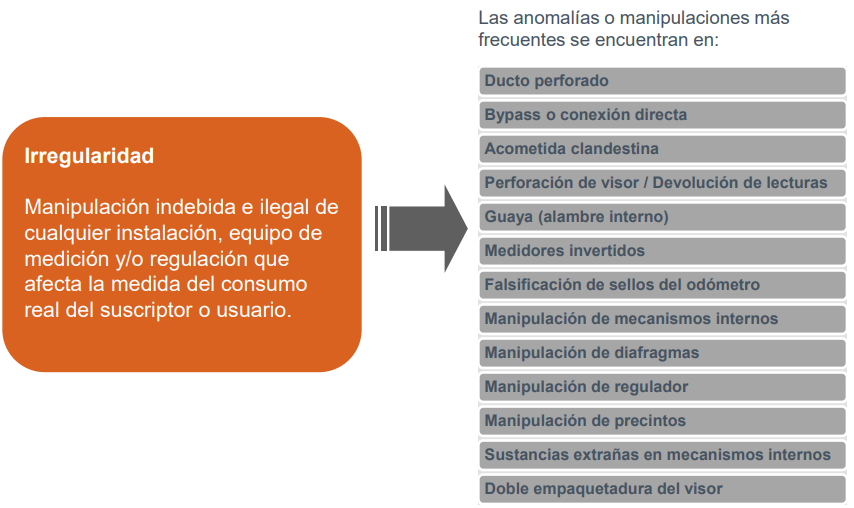

Last Updated: 2019-04-30
Conocer las generalidades del proceso de Control de Medición, con el fin que sean una herramienta para suministrar información correcta al cliente y dar trámite oportuno a los requerimientos presentados por los clientes en los diferentes canales de atención asociados a este proceso.

Adulteración del medidor: Consiste en la alteración de las características físicas de uno o varios de los componentes del equipo de medición que afecta su normal funcionamiento, ocasionando modificaciones en la medida real del consumo del cliente.